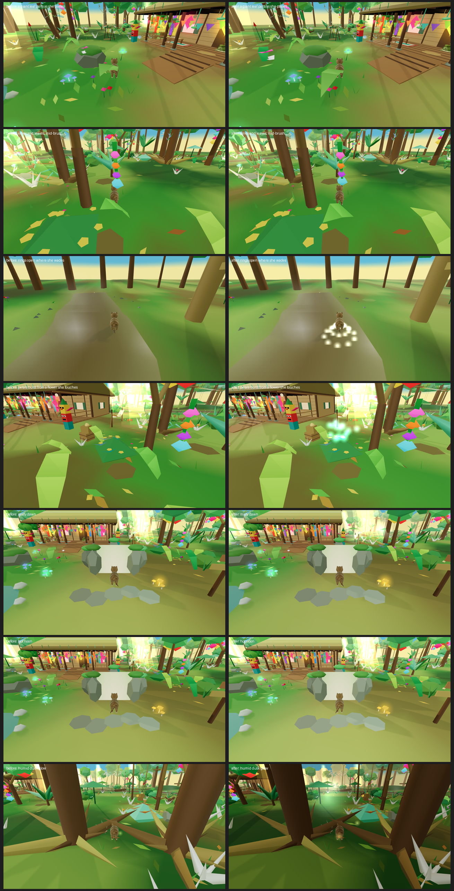

Left: before (main). Right: after. Rows: a giant leaf parted as she passes; vines and leaves mid-brush; rings opening where she wades the river; petals bursting from a flower she touches; then misty dawn, hot noon and humid dusk (the day cycles every 7 minutes). The leaf, rings and petals are plain to see; the dawn and noon light changes are gentle, and dusk is the clearest of the three (deeper, honey-toned, a low haze). Not visible in a still: foliage shivers and swings back, fireflies swirl in round her, butterflies scatter and settle, birds go up and cross the sky when she crashes through a lot of foliage, rain rings land round her in a shower, and the sound changes with the hour (birds at dawn, wind at noon, crickets and frogs at dusk, a soft rustle at each brush, a splash when she wades).
